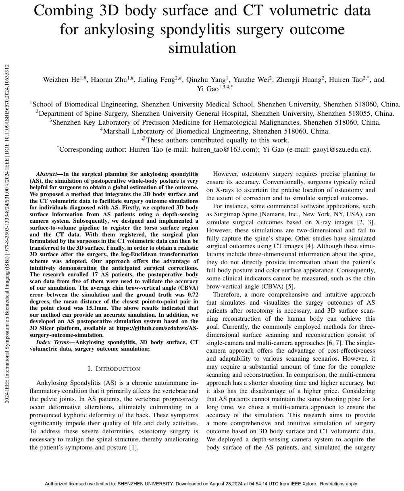
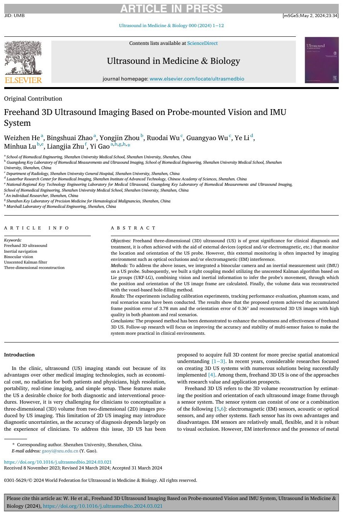

By Application · 03
Spine and Orthopedics
Surgical planning and outcome simulation for spinal surgery: fusing 3D body-surface scanning with CT volumetric data, freehand 3D ultrasound acquisition, image stitching, thoracic spine enhancement, and finite element analysis of bone structure — in close collaboration with clinical spine surgery teams.
Overview
Surgical planning and outcome simulation for spinal surgery: fusing 3D body-surface scanning with CT volumetric data, freehand 3D ultrasound acquisition, image stitching, thoracic spine enhancement, and finite element analysis of bone structure — in close collaboration with clinical spine surgery teams.
- 3D body surface + CT fusion for ankylosing spondylitis surgery simulation (ISBI 2024)
- Freehand 3D ultrasound via probe-mounted vision + IMU
- Ongoing: surface scanning, stitching, thoracic enhancement, FEA
02 · Selected work
Selected work
Each card: figure on top, key points below.

Combing 3D body surface and CT volumetric data for ankylosing spondylitis surgery outcome simulation
IEEE International Symposium on Biomedical Imaging (ISBI) · 2024
- Fuses 3D body-surface scanning with CT volumetric data.
- Simulates surgical outcomes for ankylosing spondylitis.

Freehand 3D ultrasound imaging based on probe-mounted vision and IMU system
Ultrasound in Medicine & Biology · 2024
- Probe-mounted vision + IMU enables freehand 3D ultrasound acquisition.
- Core sensing technology for surface and volumetric imaging outside the scanner.